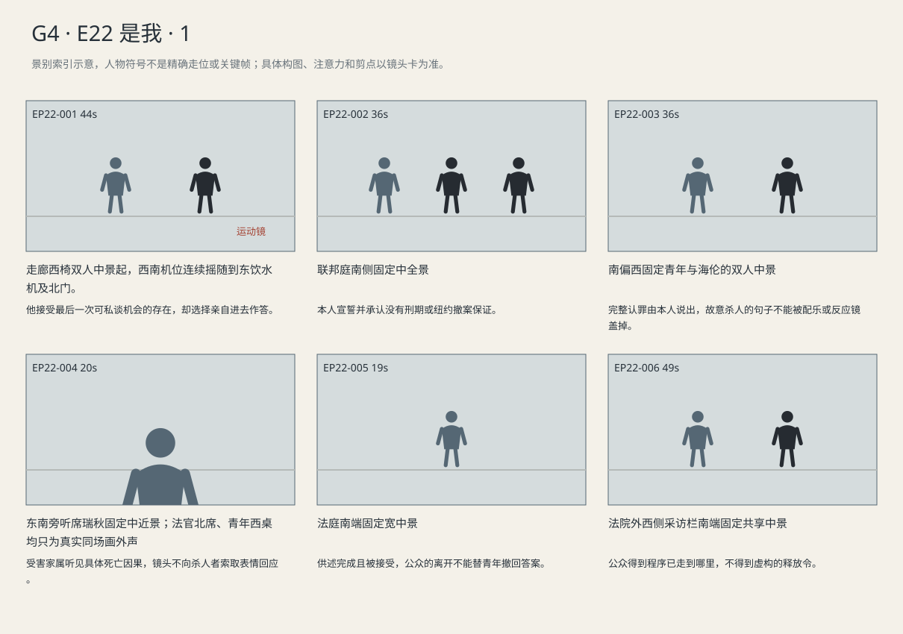

他在法庭亲口承认故意杀人、开枪致死及两项罪责；行业批评不改变认罪答案，家属不必给予谅解。
剧本Markdown · 全部独立复制稿 · 英语字幕 · 中文字幕
详细剧本
E22-SC01 · 日·联邦认罪庭前 · COURT-CORRIDOR
联邦法庭北端的门还关着，西侧椅背投下一排短影，东侧饮水机旁的托盘上堆着纸杯。路易吉穿深蓝西装、白衬衫，无领带，坐在西椅上；已按候庭程序解下腕铐，双手自由。海伦站在他南侧，将蓝案卷夹放到空椅。她等他把一口水咽下。
海伦（使用英语，等他喝完再问）：Did you get through to your mother?
中文对照：和你母亲通上话了？
他低头转了半圈杯沿。
路易吉（使用英语，把杯沿转半圈）：Yes. She made me promise to eat after this.
中文对照：通了。她让我答应结束后吃点东西。
海伦拿起夹子，身子朝南让出通向单独谈话区的一步路。
海伦（使用英语，给他让出一步，不催着进门）：If you need more time, we can talk in private.
中文对照：还想再谈谈的话，我们可以找个没人的地方。
路易吉先用左手取起膝上折好的准备纸，右手持杯完整站起。他走两步到东饮水机，将杯放到托盘，回身把准备纸递给跟过来的海伦。
路易吉（使用英语，交回准备纸，不重复解释决定）：No. You keep those. I'll answer.
中文对照：不用。那些你留着，我自己答。
海伦接过纸，没有把它再塞回他手里。两人保持站姿向北门走去；到了门前，工作人员打开门，握住门把，等在门内。
海伦（使用英语，入门前作最后一次实际提醒）：Let her finish the question. If you don't understand, ask.
中文对照：让她把问题说完。不明白就问。
路易吉站在门前，看了一眼已开的门。
路易吉（使用英语，先看门再答）：Okay.
中文对照：好。
海伦左手夹好蓝夹，先让他迈过门槛，再跟进去。纸杯和未喝完的水留在走廊。
E22-SC02 · 日·同日认罪庭 · COURT-FEDERAL
联邦法庭北席的浅灰石壁在灯下没有暖色。女法官在北，西侧海伦和路易吉面前的桌上只放蓝夹；女联邦检察官在东桌。瑞秋坐东南旁听区，棕文件袋在腿上，她把自己的家庭陈述抽出一角。西南一位灰夹克支持者坐在通道边。以下为认罪听证节选，书记员从北席下方起身。
书记员（使用英语，正式清楚）：Do you swear that your answers to the court will be truthful?
中文对照：你是否宣誓向法院如实回答？
路易吉举起右手。
路易吉（使用英语，举右手后答）：I do.
中文对照：我宣誓。
法官等他将手放下。
联邦法官（使用英语，不给提示答案）：If you don't understand a question, tell me.
中文对照：若不理解问题，请告诉我。
她翻到下一项，手指停在最高刑说明。
联邦法官（使用英语，确认不利风险）：These charges permit a life sentence. Has anyone promised a sentence, or promised that New York will dismiss its case?
中文对照：这些罪名容许判终身监禁。有人承诺过刑期，或承诺纽约会撤案吗？
路易吉把两手自然垂在身侧，没有回头找海伦。
路易吉（使用英语，听完整问句才回答，不看律师）：No. I understand. Nobody's promised me either of those.
中文对照：没有。我明白。那两件事，没人向我保证过。
法官翻过这一页，完整读出两项罪名。
联邦法官（使用英语，逐项念完）：How do you plead to interstate stalking resulting in death, and cyberstalking resulting in death?
中文对照：对于跨州跟踪致死与网络跟踪致死两项指控，你如何答辩？
他等第二项读完才答。
路易吉（使用英语，清楚不看律师）：Guilty on both counts.
中文对照：两项均认罪。
海伦将准备纸留在合着的蓝夹中。法官示意他叙述事实，他望着北席，自己开口。
路易吉（使用英语，逐句讲清自己做的事，最后一句不回避）：I went online to find out where Brian Ward would be. I traveled from another state to New York to follow him. I intended to kill him.
中文对照：我上网查布莱恩·沃德会去哪里。我从另一州来到纽约跟踪他。我当时就是打算杀死他。
他闭口等待，没有接一段理由。瑞秋慢慢把抽出一角的家庭陈述拿出来，放在文件袋上。
联邦法官（使用英语，确认具体后果）：Did you understand your conduct would place him in fear of death or serious injury?
中文对照：你是否明白自己的行为会令他害怕死亡或严重伤害？
路易吉仍面向法官。
路易吉（使用英语，不补辩解）：Yes. I shot him. He died because I shot him.
中文对照：明白。我向他开了枪，他因为我开枪而死。
瑞秋用拇指压住纸上折线，将它折回袋内，没有望向西南。青年停了一口气，再对北席补一句。
路易吉（使用英语，不转向旁听席）：I still object to what the industry does. That doesn't change my answers.
中文对照：我仍反对这个行业的一些做法，但这不改变我刚才的回答。
灰夹克支持者低头拉好外套拉链，起身侧身出排。
联邦法官（使用英语，正式）：The pleas are accepted. Sentencing will be set separately.
中文对照：法院接受认罪。量刑另行安排。
支持者沿西南通道离开，法官落笔记录；青年没有随那个人转头。瑞秋的文件袋一直合在腿上。
E22-SC03 · 下午·同日联邦法院外 · EXTERIOR
下午，联邦法院南门台阶前的西侧栏杆围着获准采访区域，东步道仍供人通行。海伦从北端门下台阶，左手持蓝夹，右手握公开递交回执。诺拉在栏杆内举起手机，红本夹在左臂，没有拦住东步道。
诺拉（使用英语，停在栏杆内问清由谁选择）：Was this his decision?
中文对照：这是他自己的决定？
海伦在栏杆前停下，将回执翻到正面。
海伦（使用英语，回答后只展示公开可看的纸）：Yes. He wanted to speak for himself. We've filed in state court. This is the receipt.
中文对照：是。他想自己说。州法院那边已经递交了，这是回执。
诺拉没有立即拍照，先翻到红本内夹着的州检方公开异议页。
诺拉（使用英语，翻开已准备的异议页，问实际后果）：The state says these are different harms, so they can prosecute. Could the plea still stop them?
中文对照：州检方说危害不同，还能继续起诉。那这次认罪还能挡住他们吗？
海伦的手仍举着回执。
海伦（使用英语，不给胜算，只说当前进度）：That's for the judge. We haven't had a ruling.
中文对照：这得由法官决定。裁定还没下来。
诺拉这才将手机对准页上印章。海伦发现自己拇指挡住日期，向旁边挪开。
海伦（使用英语，挪开挡日期的拇指，让她拍全）：Get the date in too. It's a filing receipt. Nobody's ordered his release.
中文对照：日期也拍进去。这是递交回执，没人下令释放他。
诺拉稍退半步，把整条日期和印章一并收进手机画面。海伦等她放下手机，才将回执放回蓝夹，沿东侧步道向南离开。诺拉站在原位，回看刚拍到的日期，又看了一眼异议页。
景别索引板
简化人物符号仅用于检索景别。完整镜头卡、信息变化及相邻剪点另页阅读。

逐镜复制稿
EP22-001 · 制作号E22-SH001 · 44s · 走廊西椅双人中景起，西南机位连续摇随到东饮水机及北门。
他接受最后一次可私谈机会的存在，却选择亲自进去作答。
成片采用 [0,44) 秒；2个生成候选，技术边界不是剪点。候选未生成。
成片镜 E22-SH001 共44秒；下面2个独立生成候选共同服务本镜。技术接续不等于成片剪点，不能将本文件整段提交为一次任务。先制作并核验连续表演、机位和声线，再决定延长或覆盖方案；当前无实际媒体。
【E22-SH001-G01 · 本镜采用 0—22 秒】
16:9横屏，当代美国真人现实悬疑。环境低至中等饱和，人物肤色保持真实差异与自然纹理；深黑保留衣料和道具分离，白纸与白领高光柔和有层次。冷暖来自本镜已有物理光源，不统一青橙、不磨皮、不以整体欠曝制造悬疑。遵循本镜机位、表演与焦点，不擅自追加缓推、急变焦或摇晃。
场次风格：本场时段：日·联邦认罪庭前。本场光源启用及强度以明确时段和正文为准，同场反打继承光源方向；不因景别变化任意换色温。 本地光色与材质：东南窗光按时段影响走廊，西椅、东饮水机与北门层次清楚；同一空间的人物继承一致照明，不用独立圣洁柔光区分立场。
总生成长度24秒，为中间22秒采用区间保留开头和结尾各1秒自然余量，不增添剧情。
人物：
以下为连续镜的身份库；人物是否已入画、离场及持物只依本段起态与动作，不能把整镜所有角色同时塞入本段。
路易吉，26岁意裔男性，深棕短卷发、浓眉、棕眼、较长椭圆脸、清楚下颌、精瘦体态；深蓝西装、白衬衫、无领带，面容略显疲惫但年龄外观不突变。声音中低、清楚克制。
海伦，55岁白人女性，短灰金发、窄长脸、深灰西装、灰蓝衬衫、银色腕表，蓝色案卷夹。低中音、短句准确，保留等对方回答的停顿。
法庭门工作人员，成年男性，深蓝西装、白衬衫，仅在北门按既定动作开门，无对白，不进入主要问答区域。
环境与光源：走廊南北向；西侧候证椅、东侧饮水机、北端法庭门、南端安检，东南窗光。人物和声音依当前场次，空间母稿不附带剧情事件。
景别/机位：由西椅双人中景起，在同一西南地面机位连续转向东饮水机；段尾青年持杯停在饮水机前，海伦随其后。
构图：沿用该成片镜既定机位和场景方向；当前站位、朝向与持物：青年转着纸杯，海伦站在南侧等他喝完。
起始画面：青年转着纸杯，海伦站在南侧等他喝完。
事件与表演：青年坐西椅，回答海伦关于已经结束的母亲通话的问题；海伦让出最后私谈的方向。他自己起身持杯向东走，到饮水机前停下，尚未放杯。相机随这一次真实起身与东行连续向东摇，不把与海伦的谈话变成另一通电话。
注意力变化：青年转着纸杯，海伦站在南侧等他喝完。 → 青年已经站起，持纸杯停在东侧饮水机前；海伦在他身后，准备纸仍归青年，杯尚未放在托盘。西南地面机位已经摇向东，保持当前朝向。
摄影机：西南地面机位起始固定看西椅对话；青年真实站起持杯向东走时才连续缓慢向东摇随，到饮水机前的当前停步位置停止，段尾保持朝东，不复位西椅。
焦点：先留最后一次私谈选项，再跟他选择亲自进入；杯仍属青年，不能提前出现于托盘。
结束状态：青年已经站起，持纸杯停在东侧饮水机前；海伦在他身后，准备纸仍归青年，杯尚未放在托盘。西南地面机位已经摇向东，保持当前朝向。
声音：<走廊通风、远端安检不可辨人声；当前空间连续环境底声；拟音只随本段真实动作与物件接触发生，已完成事件不重演；可辨英语仅为下列本段对白。>
(无背景音乐；先以表演、对白、真实环境声成立，禁止在技术段接缝加音乐遮掩。)
准确对白按顺序：
海伦向路易吉，等他喝完再问，只使用英语说一次：{Did you get through to your mother?}
路易吉向海伦，把杯沿转半圈，只使用英语说一次：{Yes. She made me promise to eat after this.}
海伦向路易吉，给他让出一步，不催着进门，只使用英语说一次：{If you need more time, we can talk in private.}
只说列出的英语原句；导演说明不发声，不说中文译文，不额外加旁白或对白。手机/公文/字幕均由后期叠加，生成画面不排字。单镜连续，不加入内部切镜；前后保持身份、服装、门窗、物件与接触状态一致。
【E22-SH001-G02 · 本镜采用 22—44 秒】
16:9横屏，当代美国真人现实悬疑。环境低至中等饱和，人物肤色保持真实差异与自然纹理；深黑保留衣料和道具分离，白纸与白领高光柔和有层次。冷暖来自本镜已有物理光源，不统一青橙、不磨皮、不以整体欠曝制造悬疑。遵循本镜机位、表演与焦点，不擅自追加缓推、急变焦或摇晃。
场次风格：本场时段：日·联邦认罪庭前。本场光源启用及强度以明确时段和正文为准，同场反打继承光源方向；不因景别变化任意换色温。 本地光色与材质：东南窗光按时段影响走廊，西椅、东饮水机与北门层次清楚；同一空间的人物继承一致照明，不用独立圣洁柔光区分立场。
总生成长度24秒，为中间22秒采用区间保留开头和结尾各1秒自然余量，不增添剧情。
人物：
以下为连续镜的身份库；人物是否已入画、离场及持物只依本段起态与动作，不能把整镜所有角色同时塞入本段。
路易吉，26岁意裔男性，深棕短卷发、浓眉、棕眼、较长椭圆脸、清楚下颌、精瘦体态；深蓝西装、白衬衫、无领带，面容略显疲惫但年龄外观不突变。声音中低、清楚克制。
海伦，55岁白人女性，短灰金发、窄长脸、深灰西装、灰蓝衬衫、银色腕表，蓝色案卷夹。低中音、短句准确，保留等对方回答的停顿。
法庭门工作人员，成年男性，深蓝西装、白衬衫，仅在北门按既定动作开门，无对白，不进入主要问答区域。
环境与光源：走廊南北向；西侧候证椅、东侧饮水机、北端法庭门、南端安检，东南窗光。人物和声音依当前场次，空间母稿不附带剧情事件。
景别/机位：同一西南地面机位先完成东托盘中景，再连续转为北门双人关系构图；杯留东侧画外，蓝夹和准备纸归海伦，门员只在北门。
构图：沿用该成片镜既定机位和场景方向；当前站位、朝向与持物：青年已经站起，持纸杯停在东侧饮水机前；海伦在他身后，准备纸仍归青年，杯尚未放在托盘。西南地面机位已经摇向东，保持当前朝向。
起始画面：青年已经站起，持纸杯停在东侧饮水机前；海伦在他身后，准备纸仍归青年，杯尚未放在托盘。西南地面机位已经摇向东，保持当前朝向。
事件与表演：杯留东托盘，准备纸交律师；两人走北门，听最后提醒再依次入门。 同一成片镜、同一相机路径与速度；接续上一段已发生动作，不重做开头。
注意力变化：青年已经站起，持纸杯停在东侧饮水机前；海伦在他身后，准备纸仍归青年，杯尚未放在托盘。西南地面机位已经摇向东，保持当前朝向。 → 青年已先跨过北法庭门槛，海伦跟在他后方，手中蓝夹和准备纸齐全；纸杯留东侧托盘，工作人员仍在北门边。西南地面机位已转向北门并停住。
摄影机：从G01已经朝东的原地面位置保持当前中景，青年放杯、交纸时不移动；待两人实际转身向北门走，再沿路径小幅摇向北门，到门口停住，不重新经过西椅或重做起身。
焦点：依次看放杯、交纸、向北走和入门提醒，焦点始终跟真实行进位置；技术边界不触发第二轮起拍路径。
结束状态：青年已先跨过北法庭门槛，海伦跟在他后方，手中蓝夹和准备纸齐全；纸杯留东侧托盘，工作人员仍在北门边。西南地面机位已转向北门并停住。
声音：<走廊通风、远端安检不可辨人声；当前空间连续环境底声；拟音只随本段真实动作与物件接触发生，已完成事件不重演；可辨英语仅为下列本段对白。>
(无背景音乐；先以表演、对白、真实环境声成立，禁止在技术段接缝加音乐遮掩。)
准确对白按顺序：
路易吉向海伦，交回准备纸，不重复解释决定，只使用英语说一次：{No. You keep those. I'll answer.}
海伦向路易吉，入门前作最后一次实际提醒，只使用英语说一次：{Let her finish the question. If you don't understand, ask.}
路易吉向海伦，先看门再答，只使用英语说一次：{Okay.}
只说列出的英语原句；导演说明不发声，不说中文译文，不额外加旁白或对白。手机/公文/字幕均由后期叠加，生成画面不排字。单镜连续，不加入内部切镜；前后保持身份、服装、门窗、物件与接触状态一致。静帧起态备稿
16:9横屏，当代美国真人现实悬疑。环境低至中等饱和，人物肤色保持真实差异与自然纹理；深黑保留衣料和道具分离，白纸与白领高光柔和有层次。冷暖来自本镜已有物理光源，不统一青橙、不磨皮、不以整体欠曝制造悬疑。遵循本镜机位、表演与焦点，不擅自追加缓推、急变焦或摇晃。
场次风格：本场时段：日·联邦认罪庭前。本场光源启用及强度以明确时段和正文为准，同场反打继承光源方向；不因景别变化任意换色温。 本地光色与材质：东南窗光按时段影响走廊，西椅、东饮水机与北门层次清楚；同一空间的人物继承一致照明，不用独立圣洁柔光区分立场。
路易吉，26岁意裔男性，深棕短卷发、浓眉、棕眼、较长椭圆脸、清楚下颌、精瘦体态；深蓝西装、白衬衫、无领带，面容略显疲惫但年龄外观不突变。声音中低、清楚克制。
海伦，55岁白人女性，短灰金发、窄长脸、深灰西装、灰蓝衬衫、银色腕表，蓝色案卷夹。低中音、短句准确，保留等对方回答的停顿。
法庭门工作人员，成年男性，深蓝西装、白衬衫，仅在北门按既定动作开门，无对白，不进入主要问答区域。
走廊南北向；西侧候证椅、东侧饮水机、北端法庭门、南端安检，东南窗光。人物和声音依当前场次，空间母稿不附带剧情事件。
走廊西椅双人中景起，西南机位连续摇随到东饮水机及北门。；起态构图：青年转着纸杯，海伦站在南侧等他喝完。。空间方位按上列环境，人物只处于起态；本镜后续调度不出现在静帧。此图不描画尚未发生的动作，不生成字幕和公文长字。
| 英语原句 | 中文对照 | 预定窗口 |
|---|
| 海伦：Did you get through to your mother? | 和你母亲通上话了？ | 0.8–4.71s |
| 路易吉：Yes. She made me promise to eat after this. | 通了。她让我答应结束后吃点东西。 | 5.36–10.32s |
| 海伦：If you need more time, we can talk in private. | 还想再谈谈的话，我们可以找个没人的地方。 | 10.97–16.45s |
| 路易吉：No. You keep those. I'll answer. | 不用。那些你留着，我自己答。 | 22.8–26.18s |
| 海伦：Let her finish the question. If you don't understand, ask. | 让她把问题说完。不明白就问。 | 26.83–32.31s |
| 路易吉：Okay. | 好。 | 32.96–34.02s |
观众信息：青年已来到法庭门外，但门未开。 → 他接受最后一次可私谈机会的存在，却选择亲自进去作答。
切点：成片剪点由本镜结束后注意与任务发生变化决定：他接受最后一次可私谈机会的存在，却选择亲自进去作答。 技术生成段边界不触发剪辑。
接口：本场结果成立后切入 E22-SC02（COURT-FEDERAL，日·同日认罪庭）；以新场开头建立空间和人物持物，环境声按新场接入。
EP22-002 · 制作号E22-SH004 · 36s · 联邦庭南侧固定中全景
本人宣誓并承认没有刑期或纽约撤案保证。
成片采用 [44,80) 秒；2个生成候选，技术边界不是剪点。候选未生成。
成片镜 E22-SH004 共36秒；下面2个独立生成候选共同服务本镜。技术接续不等于成片剪点，不能将本文件整段提交为一次任务。先制作并核验连续表演、机位和声线，再决定延长或覆盖方案；当前无实际媒体。
【E22-SH004-G01 · 本镜采用 0—18 秒】
16:9横屏，当代美国真人现实悬疑。环境低至中等饱和，人物肤色保持真实差异与自然纹理；深黑保留衣料和道具分离，白纸与白领高光柔和有层次。冷暖来自本镜已有物理光源，不统一青橙、不磨皮、不以整体欠曝制造悬疑。遵循本镜机位、表演与焦点，不擅自追加缓推、急变焦或摇晃。
场次风格：本场时段：日·同日认罪庭。本场光源启用及强度以明确时段和正文为准，同场反打继承光源方向；不因景别变化任意换色温。 本地光色与材质：北侧采光与中性照明配合浅灰石材和木纹，独立于州法院但继承相同肤色、黑位及高光规则；白衬衫、黑袍和纸面都留细节。
总生成长度20秒，为中间18秒采用区间保留开头和结尾各1秒自然余量，不增添剧情。
人物：
以下为连续镜的身份库；人物是否已入画、离场及持物只依本段起态与动作，不能把整镜所有角色同时塞入本段。
联邦法庭书记员，45岁亚裔男性，短黑发，黑西装、浅蓝衬衫，中音清楚，仅履行点名和宣誓职责。
路易吉，26岁意裔男性，深棕短卷发、浓眉、棕眼、较长椭圆脸、清楚下颌、精瘦体态；深蓝西装、白衬衫、无领带，面容略显疲惫但年龄外观不突变。声音中低、清楚克制。
联邦法官，58岁白人女性，灰棕短发、黑法袍.
海伦，55岁白人女性，短灰金发、窄长脸、深灰西装、灰蓝衬衫、银色腕表，蓝色案卷夹。低中音、短句准确，保留等对方回答的停顿。
联邦检察官，42岁白人女性，深灰西装。
声源与背景限定：书记员、路易吉与北侧女法官是宣誓核心；海伦在西辩方桌、女检察官在东控方桌，只作无对白背景。
环境与光源：相同方向约定但浅灰石材/木纹与较宽旁听区；独立场景，不把两法官混用。量刑、认罪由联邦法官；重复追诉由州法官。
景别/机位：联邦庭南侧固定中全景
构图：沿用该成片镜既定机位和场景方向；当前站位、朝向与持物：书记员在北席下方起身，青年立在西桌旁。
起始画面：书记员在北席下方起身，青年立在西桌旁。
事件与表演：书记员起身，青年举手宣誓后放下；法官提醒不明白须问。 同一成片镜、同一相机路径与速度；接续上一段已发生动作，不重做开头。
注意力变化：书记员在北席下方起身，青年立在西桌旁。 → 书记员起身，青年举手宣誓后放下；法官提醒不明白须问。 角色与物件停留在这一步的连续状态，机位及照明不重置。
摄影机：联邦庭南侧固定中全景，北女法官、西青年及海伦、东控方同一建立画面；不把青年挪到法官身边。
焦点：仅响应本段当前动作与受话关系；不预先转向尚未发生的后段事件。
结束状态：书记员起身，青年举手宣誓后放下；法官提醒不明白须问。 角色与物件停留在这一步的连续状态，机位及照明不重置。
声音：<法院通风和安静大厅底声；当前空间连续环境底声；拟音只随本段真实动作与物件接触发生，已完成事件不重演；可辨英语仅为下列本段对白。>
(无背景音乐；先以表演、对白、真实环境声成立，禁止在技术段接缝加音乐遮掩。)
准确对白按顺序：
书记员向路易吉，正式清楚，只使用英语说一次：{Do you swear that your answers to the court will be truthful?}
路易吉向书记员，举右手后答，只使用英语说一次：{I do.}
联邦法官向路易吉，不给提示答案，只使用英语说一次：{If you don't understand a question, tell me.}
只说列出的英语原句；导演说明不发声，不说中文译文，不额外加旁白或对白。手机/公文/字幕均由后期叠加，生成画面不排字。单镜连续，不加入内部切镜；前后保持身份、服装、门窗、物件与接触状态一致。
【E22-SH004-G02 · 本镜采用 18—36 秒】
16:9横屏，当代美国真人现实悬疑。环境低至中等饱和，人物肤色保持真实差异与自然纹理；深黑保留衣料和道具分离，白纸与白领高光柔和有层次。冷暖来自本镜已有物理光源，不统一青橙、不磨皮、不以整体欠曝制造悬疑。遵循本镜机位、表演与焦点，不擅自追加缓推、急变焦或摇晃。
场次风格：本场时段：日·同日认罪庭。本场光源启用及强度以明确时段和正文为准，同场反打继承光源方向；不因景别变化任意换色温。 本地光色与材质：北侧采光与中性照明配合浅灰石材和木纹，独立于州法院但继承相同肤色、黑位及高光规则；白衬衫、黑袍和纸面都留细节。
总生成长度20秒，为中间18秒采用区间保留开头和结尾各1秒自然余量，不增添剧情。
人物：
以下为连续镜的身份库；人物是否已入画、离场及持物只依本段起态与动作，不能把整镜所有角色同时塞入本段。
联邦法庭书记员，45岁亚裔男性，短黑发，黑西装、浅蓝衬衫，中音清楚，仅履行点名和宣誓职责。
路易吉，26岁意裔男性，深棕短卷发、浓眉、棕眼、较长椭圆脸、清楚下颌、精瘦体态；深蓝西装、白衬衫、无领带，面容略显疲惫但年龄外观不突变。声音中低、清楚克制。
联邦法官，58岁白人女性，灰棕短发、黑法袍.
海伦，55岁白人女性，短灰金发、窄长脸、深灰西装、灰蓝衬衫、银色腕表，蓝色案卷夹。低中音、短句准确，保留等对方回答的停顿。
联邦检察官，42岁白人女性，深灰西装。
声源与背景限定：书记员、路易吉与北侧女法官是宣誓核心；海伦在西辩方桌、女检察官在东控方桌，只作无对白背景。
环境与光源：相同方向约定但浅灰石材/木纹与较宽旁听区；独立场景，不把两法官混用。量刑、认罪由联邦法官；重复追诉由州法官。
景别/机位：联邦庭南侧固定中全景
构图：沿用该成片镜既定机位和场景方向；当前站位、朝向与持物：书记员起身，青年举手宣誓后放下；法官提醒不明白须问。 角色与物件停留在这一步的连续状态，机位及照明不重置。
起始画面：书记员起身，青年举手宣誓后放下；法官提醒不明白须问。 角色与物件停留在这一步的连续状态，机位及照明不重置。
事件与表演：法官完整问终身风险和未获承诺，青年听完回答，两手自然垂下。 同一成片镜、同一相机路径与速度；接续上一段已发生动作，不重做开头。
注意力变化：书记员起身，青年举手宣誓后放下；法官提醒不明白须问。 角色与物件停留在这一步的连续状态，机位及照明不重置。 → 法官完整问终身风险和未获承诺，青年听完回答，两手自然垂下。 角色与物件停留在这一步的连续状态，机位及照明不重置。
摄影机：联邦庭南侧固定中全景，北女法官、西青年及海伦、东控方同一建立画面；不把青年挪到法官身边。
焦点：仅响应本段当前动作与受话关系；不预先转向尚未发生的后段事件。
结束状态：法官完整问终身风险和未获承诺，青年听完回答，两手自然垂下。 角色与物件停留在这一步的连续状态，机位及照明不重置。
声音：<法院通风和安静大厅底声；当前空间连续环境底声；拟音只随本段真实动作与物件接触发生，已完成事件不重演；可辨英语仅为下列本段对白。>
(无背景音乐；先以表演、对白、真实环境声成立，禁止在技术段接缝加音乐遮掩。)
准确对白按顺序：
联邦法官向路易吉，确认不利风险，只使用英语说一次：{These charges permit a life sentence. Has anyone promised a sentence, or promised that New York will dismiss its case?}
路易吉向联邦法官，听完整问句才回答，不看律师，只使用英语说一次：{No. I understand. Nobody's promised me either of those.}
只说列出的英语原句；导演说明不发声，不说中文译文，不额外加旁白或对白。手机/公文/字幕均由后期叠加，生成画面不排字。单镜连续，不加入内部切镜；前后保持身份、服装、门窗、物件与接触状态一致。静帧起态备稿
16:9横屏，当代美国真人现实悬疑。环境低至中等饱和，人物肤色保持真实差异与自然纹理；深黑保留衣料和道具分离，白纸与白领高光柔和有层次。冷暖来自本镜已有物理光源，不统一青橙、不磨皮、不以整体欠曝制造悬疑。遵循本镜机位、表演与焦点，不擅自追加缓推、急变焦或摇晃。
场次风格：本场时段：日·同日认罪庭。本场光源启用及强度以明确时段和正文为准，同场反打继承光源方向；不因景别变化任意换色温。 本地光色与材质：北侧采光与中性照明配合浅灰石材和木纹，独立于州法院但继承相同肤色、黑位及高光规则；白衬衫、黑袍和纸面都留细节。
联邦法庭书记员，45岁亚裔男性，短黑发，黑西装、浅蓝衬衫，中音清楚，仅履行点名和宣誓职责。
路易吉，26岁意裔男性，深棕短卷发、浓眉、棕眼、较长椭圆脸、清楚下颌、精瘦体态；深蓝西装、白衬衫、无领带，面容略显疲惫但年龄外观不突变。声音中低、清楚克制。
联邦法官，58岁白人女性，灰棕短发、黑法袍.
海伦，55岁白人女性，短灰金发、窄长脸、深灰西装、灰蓝衬衫、银色腕表，蓝色案卷夹。低中音、短句准确，保留等对方回答的停顿。
联邦检察官，42岁白人女性，深灰西装。
相同方向约定但浅灰石材/木纹与较宽旁听区；独立场景，不把两法官混用。量刑、认罪由联邦法官；重复追诉由州法官。
联邦庭南侧固定中全景；起态构图：书记员在北席下方起身，青年立在西桌旁。。空间方位按上列环境，人物只处于起态；本镜后续调度不出现在静帧。此图不描画尚未发生的动作，不生成字幕和公文长字。
| 英语原句 | 中文对照 | 预定窗口 |
|---|
| 书记员：Do you swear that your answers to the court will be truthful? | 你是否宣誓向法院如实回答？ | 0.8–7.33s |
| 路易吉：I do. | 我宣誓。 | 7.98–9.26s |
| 联邦法官：If you don't understand a question, tell me. | 若不理解问题，请告诉我。 | 9.91–14.34s |
| 联邦法官：These charges permit a life sentence. Has anyone promised a sentence, or promised that New York will dismiss its case? | 这些罪名容许判终身监禁。有人承诺过刑期，或承诺纽约会撤案吗？ | 18.8–29.52s |
| 路易吉：No. I understand. Nobody's promised me either of those. | 没有。我明白。那两件事，没人向我保证过。 | 30.17–35.13s |
观众信息：人物刚入庭，联邦空间尚未建立。 → 本人宣誓并承认没有刑期或纽约撤案保证。
切点：成片剪点由本镜结束后注意与任务发生变化决定：本人宣誓并承认没有刑期或纽约撤案保证。 技术生成段边界不触发剪辑。
接口：下一成片镜 E22-SH006。同场时承接本镜已完成动作，不重复表演；跨场依剧本时间和空间建立。
EP22-003 · 制作号E22-SH006 · 36s · 南偏西固定青年与海伦的双人中景
完整认罪由本人说出，故意杀人的句子不能被配乐或反应镜盖掉。
成片采用 [80,116) 秒；2个生成候选，技术边界不是剪点。候选未生成。
成片镜 E22-SH006 共36秒；下面2个独立生成候选共同服务本镜。技术接续不等于成片剪点，不能将本文件整段提交为一次任务。先制作并核验连续表演、机位和声线，再决定延长或覆盖方案；当前无实际媒体。
【E22-SH006-G01 · 本镜采用 0—18 秒】
16:9横屏，当代美国真人现实悬疑。环境低至中等饱和，人物肤色保持真实差异与自然纹理；深黑保留衣料和道具分离，白纸与白领高光柔和有层次。冷暖来自本镜已有物理光源，不统一青橙、不磨皮、不以整体欠曝制造悬疑。遵循本镜机位、表演与焦点，不擅自追加缓推、急变焦或摇晃。
场次风格：本场时段：日·同日认罪庭。本场光源启用及强度以明确时段和正文为准，同场反打继承光源方向；不因景别变化任意换色温。 本地光色与材质：北侧采光与中性照明配合浅灰石材和木纹，独立于州法院但继承相同肤色、黑位及高光规则；白衬衫、黑袍和纸面都留细节。
总生成长度20秒，为中间18秒采用区间保留开头和结尾各1秒自然余量，不增添剧情。
人物：
以下为连续镜的身份库；人物是否已入画、离场及持物只依本段起态与动作，不能把整镜所有角色同时塞入本段。
本镜画外继承，声源/人物不入画：联邦法官，58岁白人女性，灰棕短发、黑法袍.
路易吉，26岁意裔男性，深棕短卷发、浓眉、棕眼、较长椭圆脸、清楚下颌、精瘦体态；深蓝西装、白衬衫、无领带，面容略显疲惫但年龄外观不突变。声音中低、清楚克制。
海伦，55岁白人女性，短灰金发、窄长脸、深灰西装、灰蓝衬衫、银色腕表，蓝色案卷夹。低中音、短句准确，保留等对方回答的停顿。
声源与背景限定：青年与海伦画内，女法官问题从北侧画外传来。
环境与光源：相同方向约定但浅灰石材/木纹与较宽旁听区；独立场景，不把两法官混用。量刑、认罪由联邦法官；重复追诉由州法官。
景别/机位：南偏西固定青年与海伦的双人中景
构图：沿用该成片镜既定机位和场景方向；当前站位、朝向与持物：青年仍直立，海伦坐其南边，夹子合着。
起始画面：青年仍直立，海伦坐其南边，夹子合着。
事件与表演：北席念两项具体致死跟踪罪，青年听完认两项，律师把准备纸留在夹内。 同一成片镜、同一相机路径与速度；接续上一段已发生动作，不重做开头。
注意力变化：青年仍直立，海伦坐其南边，夹子合着。 → 北席念两项具体致死跟踪罪，青年听完认两项，律师把准备纸留在夹内。 角色与物件停留在这一步的连续状态，机位及照明不重置。
摄影机：南偏西固定青年与海伦的双人中景，北席问题从同场画外传入；青年站在西桌，不向旁听席转身演说，律师不递准备纸。
焦点：仅响应本段当前动作与受话关系；不预先转向尚未发生的后段事件。
结束状态：北席念两项具体致死跟踪罪，青年听完认两项，律师把准备纸留在夹内。 角色与物件停留在这一步的连续状态，机位及照明不重置。
声音：<法院通风和安静大厅底声；当前空间连续环境底声；拟音只随本段真实动作与物件接触发生，已完成事件不重演；可辨英语仅为下列本段对白。>
(无背景音乐；先以表演、对白、真实环境声成立，禁止在技术段接缝加音乐遮掩。)
准确对白按顺序：
联邦法官向路易吉，逐项念完，只使用英语说一次：{How do you plead to interstate stalking resulting in death, and cyberstalking resulting in death?}
路易吉向联邦法官，清楚不看律师，只使用英语说一次：{Guilty on both counts.}
只说列出的英语原句；导演说明不发声，不说中文译文，不额外加旁白或对白。手机/公文/字幕均由后期叠加，生成画面不排字。单镜连续，不加入内部切镜；前后保持身份、服装、门窗、物件与接触状态一致。
【E22-SH006-G02 · 本镜采用 18—36 秒】
16:9横屏，当代美国真人现实悬疑。环境低至中等饱和，人物肤色保持真实差异与自然纹理；深黑保留衣料和道具分离，白纸与白领高光柔和有层次。冷暖来自本镜已有物理光源，不统一青橙、不磨皮、不以整体欠曝制造悬疑。遵循本镜机位、表演与焦点，不擅自追加缓推、急变焦或摇晃。
场次风格：本场时段：日·同日认罪庭。本场光源启用及强度以明确时段和正文为准，同场反打继承光源方向；不因景别变化任意换色温。 本地光色与材质：北侧采光与中性照明配合浅灰石材和木纹，独立于州法院但继承相同肤色、黑位及高光规则；白衬衫、黑袍和纸面都留细节。
总生成长度20秒，为中间18秒采用区间保留开头和结尾各1秒自然余量，不增添剧情。
人物：
以下为连续镜的身份库；人物是否已入画、离场及持物只依本段起态与动作，不能把整镜所有角色同时塞入本段。
本镜画外继承，声源/人物不入画：联邦法官，58岁白人女性，灰棕短发、黑法袍.
路易吉，26岁意裔男性，深棕短卷发、浓眉、棕眼、较长椭圆脸、清楚下颌、精瘦体态；深蓝西装、白衬衫、无领带，面容略显疲惫但年龄外观不突变。声音中低、清楚克制。
海伦，55岁白人女性，短灰金发、窄长脸、深灰西装、灰蓝衬衫、银色腕表，蓝色案卷夹。低中音、短句准确，保留等对方回答的停顿。
声源与背景限定：青年与海伦画内，女法官问题从北侧画外传来。
环境与光源：相同方向约定但浅灰石材/木纹与较宽旁听区；独立场景，不把两法官混用。量刑、认罪由联邦法官；重复追诉由州法官。
景别/机位：南偏西固定青年与海伦的双人中景
构图：沿用该成片镜既定机位和场景方向；当前站位、朝向与持物：北席念两项具体致死跟踪罪，青年听完认两项，律师把准备纸留在夹内。 角色与物件停留在这一步的连续状态，机位及照明不重置。
起始画面：北席念两项具体致死跟踪罪，青年听完认两项，律师把准备纸留在夹内。 角色与物件停留在这一步的连续状态，机位及照明不重置。
事件与表演：青年看北席讲上网查行程、跨州跟踪及故意杀人，讲完闭口等问，不转旁听席。 同一成片镜、同一相机路径与速度；接续上一段已发生动作，不重做开头。
注意力变化：北席念两项具体致死跟踪罪，青年听完认两项，律师把准备纸留在夹内。 角色与物件停留在这一步的连续状态，机位及照明不重置。 → 青年看北席讲上网查行程、跨州跟踪及故意杀人，讲完闭口等问，不转旁听席。 角色与物件停留在这一步的连续状态，机位及照明不重置。
摄影机：南偏西固定青年与海伦的双人中景，北席问题从同场画外传入；青年站在西桌，不向旁听席转身演说，律师不递准备纸。
焦点：仅响应本段当前动作与受话关系；不预先转向尚未发生的后段事件。
结束状态：青年看北席讲上网查行程、跨州跟踪及故意杀人，讲完闭口等问，不转旁听席。 角色与物件停留在这一步的连续状态，机位及照明不重置。
声音：<法院通风和安静大厅底声；当前空间连续环境底声；拟音只随本段真实动作与物件接触发生，已完成事件不重演；可辨英语仅为下列本段对白。>
(无背景音乐；先以表演、对白、真实环境声成立，禁止在技术段接缝加音乐遮掩。)
准确对白按顺序：
路易吉向联邦法官，逐句讲清自己做的事，最后一句不回避，只使用英语说一次：{I went online to find out where Brian Ward would be. I traveled from another state to New York to follow him. I intended to kill him.}
只说列出的英语原句；导演说明不发声，不说中文译文，不额外加旁白或对白。手机/公文/字幕均由后期叠加，生成画面不排字。单镜连续，不加入内部切镜；前后保持身份、服装、门窗、物件与接触状态一致。静帧起态备稿
16:9横屏，当代美国真人现实悬疑。环境低至中等饱和，人物肤色保持真实差异与自然纹理；深黑保留衣料和道具分离，白纸与白领高光柔和有层次。冷暖来自本镜已有物理光源，不统一青橙、不磨皮、不以整体欠曝制造悬疑。遵循本镜机位、表演与焦点，不擅自追加缓推、急变焦或摇晃。
场次风格：本场时段：日·同日认罪庭。本场光源启用及强度以明确时段和正文为准，同场反打继承光源方向；不因景别变化任意换色温。 本地光色与材质：北侧采光与中性照明配合浅灰石材和木纹，独立于州法院但继承相同肤色、黑位及高光规则；白衬衫、黑袍和纸面都留细节。
路易吉，26岁意裔男性，深棕短卷发、浓眉、棕眼、较长椭圆脸、清楚下颌、精瘦体态；深蓝西装、白衬衫、无领带，面容略显疲惫但年龄外观不突变。声音中低、清楚克制。
海伦，55岁白人女性，短灰金发、窄长脸、深灰西装、灰蓝衬衫、银色腕表，蓝色案卷夹。低中音、短句准确，保留等对方回答的停顿。
相同方向约定但浅灰石材/木纹与较宽旁听区；独立场景，不把两法官混用。量刑、认罪由联邦法官；重复追诉由州法官。
南偏西固定青年与海伦的双人中景；起态构图：青年仍直立，海伦坐其南边，夹子合着。。空间方位按上列环境，人物只处于起态；本镜后续调度不出现在静帧。此图不描画尚未发生的动作，不生成字幕和公文长字。
| 英语原句 | 中文对照 | 预定窗口 |
|---|
| 联邦法官：How do you plead to interstate stalking resulting in death, and cyberstalking resulting in death? | 对于跨州跟踪致死与网络跟踪致死两项指控，你如何答辩？ | 0.8–8.9s |
| 路易吉：Guilty on both counts. | 两项均认罪。 | 9.55–11.88s |
| 路易吉：I went online to find out where Brian Ward would be. I traveled from another state to New York to follow him. I intended to kill him. | 我上网查布莱恩·沃德会去哪里。我从另一州来到纽约跟踪他。我当时就是打算杀死他。 | 18.8–33.2s |
观众信息：风险和无承诺已确认。 → 完整认罪由本人说出，故意杀人的句子不能被配乐或反应镜盖掉。
切点：成片剪点由本镜结束后注意与任务发生变化决定：完整认罪由本人说出，故意杀人的句子不能被配乐或反应镜盖掉。 技术生成段边界不触发剪辑。
接口：下一成片镜 E22-SH008。同场时承接本镜已完成动作，不重复表演；跨场依剧本时间和空间建立。
EP22-004 · 制作号E22-SH008 · 20s · 东南旁听席瑞秋固定中近景；法官北席、青年西桌均只为真实同场画外声
受害家属听见具体死亡因果，镜头不向杀人者索取表情回应。
成片采用 [116,136) 秒；1个生成候选，技术边界不是剪点。候选未生成。
16:9横屏，当代美国真人现实悬疑。环境低至中等饱和，人物肤色保持真实差异与自然纹理；深黑保留衣料和道具分离，白纸与白领高光柔和有层次。冷暖来自本镜已有物理光源，不统一青橙、不磨皮、不以整体欠曝制造悬疑。遵循本镜机位、表演与焦点，不擅自追加缓推、急变焦或摇晃。
场次风格：本场时段：日·同日认罪庭。本场光源启用及强度以明确时段和正文为准，同场反打继承光源方向；不因景别变化任意换色温。 本地光色与材质：北侧采光与中性照明配合浅灰石材和木纹，独立于州法院但继承相同肤色、黑位及高光规则；白衬衫、黑袍和纸面都留细节。
总生成长度22秒，为中间20秒采用区间保留开头和结尾各1秒自然余量，不增添剧情。
人物：
本镜画外继承，声源/人物不入画：联邦法官，58岁白人女性，灰棕短发、黑法袍.
本镜画外继承，声源/人物不入画：路易吉，26岁意裔男性，深棕短卷发、浓眉、棕眼、较长椭圆脸、清楚下颌、精瘦体态；深蓝西装、白衬衫、无领带，面容略显疲惫但年龄外观不突变。声音中低、清楚克制。
瑞秋，45岁白人女性，深金棕齐肩发、棕羊毛外套、黑连衣裙、素银耳钉，棕色文件袋。声音中低、压住情绪，不全程哽咽。
声源与背景限定：画面留在东南旁听席瑞秋折纸，问答来自北席女法官与西桌青年，二者不出现在瑞秋身旁。
环境与光源：相同方向约定但浅灰石材/木纹与较宽旁听区；独立场景，不把两法官混用。量刑、认罪由联邦法官；重复追诉由州法官。
景别/机位：东南旁听席瑞秋固定中近景；法官北席、青年西桌均只为真实同场画外声
构图：瑞秋东南席独自一排中景，纸与袋在前景膝上，北法官与西青年都为画外声音；后景东木栏虚化，不把青年放她身后近处。本成片镜按如下连续机位与人物动作执行：东南旁听席瑞秋固定中近景；法官北席、青年西桌均只为真实同场画外声，不把任何一人加入她身边。 她将家庭陈述抽出放在棕袋上，听完整问及青年承认开枪致死，拇指按折线把纸慢慢折回，不与支持者交换目光。
起始画面：瑞秋东南坐着，把家庭陈述抽出放在棕袋上。
事件与表演：她将家庭陈述抽出放在棕袋上，听完整问及青年承认开枪致死，拇指按折线把纸慢慢折回，不与支持者交换目光。
注意力变化：本人已承认杀人意图，家属仍有自己的话。 → 受害家属听见具体死亡因果，镜头不向杀人者索取表情回应。
摄影机：东南旁听席瑞秋固定中近景；法官北席、青年西桌均只为真实同场画外声，不把任何一人加入她身边。
焦点：按人物当前任务保持共享画面可读；受害家属听见具体死亡因果，镜头不向杀人者索取表情回应。 不按每句说话人自动反打；细字由后期证据页必要叠加，不要求景深同时清楚全部正文。
结束状态：受害家属听见具体死亡因果，镜头不向杀人者索取表情回应。；具体动作终态：她将家庭陈述抽出放在棕袋上，听完整问及青年承认开枪致死，拇指按折线把纸慢慢折回，不与支持者交换目光。
声音：<法官北向、青年西向同场原声；折纸声只在两句空隙清楚。；只保留本镜对白表所列可辨英语，原场内画外、电话、直播声源关系保持；不增配解释旁白。>
(无背景音乐；先以表演、对白、真实环境声成立，禁止在技术段接缝加音乐遮掩。)
准确对白按顺序：
联邦法官向路易吉，确认具体后果，只使用英语说一次：{Did you understand your conduct would place him in fear of death or serious injury?}
路易吉向联邦法官，不补辩解，只使用英语说一次：{Yes. I shot him. He died because I shot him.}
只说列出的英语原句；导演说明不发声，不说中文译文，不额外加旁白或对白。手机/公文/字幕均由后期叠加，生成画面不排字。单镜连续，不加入内部切镜；前后保持身份、服装、门窗、物件与接触状态一致。静帧起态备稿
16:9横屏，当代美国真人现实悬疑。环境低至中等饱和，人物肤色保持真实差异与自然纹理；深黑保留衣料和道具分离，白纸与白领高光柔和有层次。冷暖来自本镜已有物理光源，不统一青橙、不磨皮、不以整体欠曝制造悬疑。遵循本镜机位、表演与焦点，不擅自追加缓推、急变焦或摇晃。
场次风格：本场时段：日·同日认罪庭。本场光源启用及强度以明确时段和正文为准，同场反打继承光源方向；不因景别变化任意换色温。 本地光色与材质：北侧采光与中性照明配合浅灰石材和木纹，独立于州法院但继承相同肤色、黑位及高光规则；白衬衫、黑袍和纸面都留细节。
瑞秋，45岁白人女性，深金棕齐肩发、棕羊毛外套、黑连衣裙、素银耳钉，棕色文件袋。声音中低、压住情绪，不全程哽咽。
相同方向约定但浅灰石材/木纹与较宽旁听区；独立场景，不把两法官混用。量刑、认罪由联邦法官；重复追诉由州法官。
东南旁听席瑞秋固定中近景；法官北席、青年西桌均只为真实同场画外声；起态构图：瑞秋东南坐着，把家庭陈述抽出放在棕袋上。。空间方位按上列环境，人物只处于起态；本镜后续调度不出现在静帧。此图不描画尚未发生的动作，不生成字幕和公文长字。
| 英语原句 | 中文对照 | 预定窗口 |
|---|
| 联邦法官：Did you understand your conduct would place him in fear of death or serious injury? | 你是否明白自己的行为会令他害怕死亡或严重伤害？ | 0.8–8.9s |
| 路易吉：Yes. I shot him. He died because I shot him. | 明白。我向他开了枪，他因为我开枪而死。 | 9.55–15.03s |
观众信息：本人已承认杀人意图，家属仍有自己的话。 → 受害家属听见具体死亡因果，镜头不向杀人者索取表情回应。
切点：成片剪点由本镜结束后注意与任务发生变化决定：受害家属听见具体死亡因果，镜头不向杀人者索取表情回应。 技术生成段边界不触发剪辑。
接口：下一成片镜 E22-SH009。同场时承接本镜已完成动作，不重复表演；跨场依剧本时间和空间建立。
EP22-005 · 制作号E22-SH009 · 19s · 法庭南端固定宽中景
供述完成且被接受，公众的离开不能替青年撤回答案。
成片采用 [136,155) 秒；1个生成候选，技术边界不是剪点。候选未生成。
16:9横屏，当代美国真人现实悬疑。环境低至中等饱和，人物肤色保持真实差异与自然纹理；深黑保留衣料和道具分离，白纸与白领高光柔和有层次。冷暖来自本镜已有物理光源，不统一青橙、不磨皮、不以整体欠曝制造悬疑。遵循本镜机位、表演与焦点，不擅自追加缓推、急变焦或摇晃。
场次风格：本场时段：日·同日认罪庭。本场光源启用及强度以明确时段和正文为准，同场反打继承光源方向；不因景别变化任意换色温。 本地光色与材质：北侧采光与中性照明配合浅灰石材和木纹，独立于州法院但继承相同肤色、黑位及高光规则；白衬衫、黑袍和纸面都留细节。
总生成长度21秒，为中间19秒采用区间保留开头和结尾各1秒自然余量，不增添剧情。
人物：
路易吉，26岁意裔男性，深棕短卷发、浓眉、棕眼、较长椭圆脸、清楚下颌、精瘦体态；深蓝西装、白衬衫、无领带，面容略显疲惫但年龄外观不突变。声音中低、清楚克制。
联邦法官，58岁白人女性，灰棕短发、黑法袍.
瑞秋，45岁白人女性，深金棕齐肩发、棕羊毛外套、黑连衣裙、素银耳钉，棕色文件袋。声音中低、压住情绪，不全程哽咽。
旁听支持者，一名35岁男性，灰夹克、深色长裤，在西南旁听席按既定动作静静离开，无对白，不煽动人群。
环境与光源：相同方向约定但浅灰石材/木纹与较宽旁听区；独立场景，不把两法官混用。量刑、认罪由联邦法官；重复追诉由州法官。
景别/机位：法庭南端固定宽中景
构图：灰夹克支持者前景西南起身，青年西桌、北女法官在中后景可辨；东南瑞秋只在右边层次，文件袋合着，不展示她面部为青年背书。本成片镜按如下连续机位与人物动作执行：法庭南端固定宽中景，西青年、北席和西南通道同场，灰夹克支持者侧身离排有真实路径，不插煽动人群。 青年仍面向北席说行业反对不改变供述。支持者拉好外套侧身起立，法官接受两项认罪并另定量刑；支持者从西南通道走出，青年不随他转头。
起始画面：西南灰夹克支持者坐通道边，青年仍立西桌。
事件与表演：青年仍面向北席说行业反对不改变供述。支持者拉好外套侧身起立，法官接受两项认罪并另定量刑；支持者从西南通道走出，青年不随他转头。
注意力变化：家属刚收起自己的纸，罪责没有被行业问题替代。 → 供述完成且被接受，公众的离开不能替青年撤回答案。
摄影机：法庭南端固定宽中景，西青年、北席和西南通道同场，灰夹克支持者侧身离排有真实路径，不插煽动人群。
焦点：按人物当前任务保持共享画面可读；供述完成且被接受，公众的离开不能替青年撤回答案。 不按每句说话人自动反打；细字由后期证据页必要叠加，不要求景深同时清楚全部正文。
结束状态：供述完成且被接受，公众的离开不能替青年撤回答案。；具体动作终态：青年仍面向北席说行业反对不改变供述。支持者拉好外套侧身起立，法官接受两项认罪并另定量刑；支持者从西南通道走出，青年不随他转头。
声音：<外套拉链、座椅轻回弹、法官宣告；不加观众掌声。；只保留本镜对白表所列可辨英语，原场内画外、电话、直播声源关系保持；不增配解释旁白。>
(无背景音乐；先以表演、对白、真实环境声成立，禁止在技术段接缝加音乐遮掩。)
准确对白按顺序：
路易吉向联邦法官，不转向旁听席，只使用英语说一次：{I still object to what the industry does. That doesn't change my answers.}
联邦法官向法庭各方，正式，只使用英语说一次：{The pleas are accepted. Sentencing will be set separately.}
只说列出的英语原句；导演说明不发声，不说中文译文，不额外加旁白或对白。手机/公文/字幕均由后期叠加，生成画面不排字。单镜连续，不加入内部切镜；前后保持身份、服装、门窗、物件与接触状态一致。静帧起态备稿
16:9横屏，当代美国真人现实悬疑。环境低至中等饱和，人物肤色保持真实差异与自然纹理；深黑保留衣料和道具分离，白纸与白领高光柔和有层次。冷暖来自本镜已有物理光源，不统一青橙、不磨皮、不以整体欠曝制造悬疑。遵循本镜机位、表演与焦点，不擅自追加缓推、急变焦或摇晃。
场次风格：本场时段：日·同日认罪庭。本场光源启用及强度以明确时段和正文为准，同场反打继承光源方向；不因景别变化任意换色温。 本地光色与材质：北侧采光与中性照明配合浅灰石材和木纹，独立于州法院但继承相同肤色、黑位及高光规则；白衬衫、黑袍和纸面都留细节。
路易吉，26岁意裔男性，深棕短卷发、浓眉、棕眼、较长椭圆脸、清楚下颌、精瘦体态；深蓝西装、白衬衫、无领带，面容略显疲惫但年龄外观不突变。声音中低、清楚克制。
联邦法官，58岁白人女性，灰棕短发、黑法袍.
瑞秋，45岁白人女性，深金棕齐肩发、棕羊毛外套、黑连衣裙、素银耳钉，棕色文件袋。声音中低、压住情绪，不全程哽咽。
旁听支持者，一名35岁男性，灰夹克、深色长裤，在西南旁听席按既定动作静静离开，无对白，不煽动人群。
相同方向约定但浅灰石材/木纹与较宽旁听区；独立场景，不把两法官混用。量刑、认罪由联邦法官；重复追诉由州法官。
法庭南端固定宽中景；起态构图：西南灰夹克支持者坐通道边，青年仍立西桌。。空间方位按上列环境，人物只处于起态；本镜后续调度不出现在静帧。此图不描画尚未发生的动作，不生成字幕和公文长字。
| 英语原句 | 中文对照 | 预定窗口 |
|---|
| 路易吉：I still object to what the industry does. That doesn't change my answers. | 我仍反对这个行业的一些做法，但这不改变我刚才的回答。 | 0.8–7.85s |
| 联邦法官：The pleas are accepted. Sentencing will be set separately. | 法院接受认罪。量刑另行安排。 | 8.5–13.46s |
观众信息：家属刚收起自己的纸，罪责没有被行业问题替代。 → 供述完成且被接受，公众的离开不能替青年撤回答案。
切点：成片剪点由本镜结束后注意与任务发生变化决定：供述完成且被接受，公众的离开不能替青年撤回答案。 技术生成段边界不触发剪辑。
接口：本人完成认罪问答后才离开法庭；切法院外传播反应，未提前以标题代替本人回答。
EP22-006 · 制作号E22-SH010 · 49s · 法院外西侧采访栏南端固定共享中景
公众得到程序已走到哪里，不得到虚构的释放令。
成片采用 [155,204) 秒；2个生成候选，技术边界不是剪点。候选未生成。
成片镜 E22-SH010 共49秒；下面2个独立生成候选共同服务本镜。技术接续不等于成片剪点，不能将本文件整段提交为一次任务。先制作并核验连续表演、机位和声线，再决定延长或覆盖方案；当前无实际媒体。
【E22-SH010-G01 · 本镜采用 0—25 秒】
16:9横屏，当代美国真人现实悬疑。环境低至中等饱和，人物肤色保持真实差异与自然纹理；深黑保留衣料和道具分离，白纸与白领高光柔和有层次。冷暖来自本镜已有物理光源，不统一青橙、不磨皮、不以整体欠曝制造悬疑。遵循本镜机位、表演与焦点，不擅自追加缓推、急变焦或摇晃。
场次风格：本场时段：下午·同日联邦法院外。本场光源启用及强度以明确时段和正文为准，同场反打继承光源方向；不因景别变化任意换色温。 本地光色与材质：沿用本镜明确的街道、入口和时段，灰石、外套与肤色保持自然；围观手机或采访设备不自动带来新的全场光源。
总生成长度27秒，为中间25秒采用区间保留开头和结尾各1秒自然余量，不增添剧情。
人物：
以下为连续镜的身份库；人物是否已入画、离场及持物只依本段起态与动作，不能把整镜所有角色同时塞入本段。
海伦，55岁白人女性，短灰金发、窄长脸、深灰西装、灰蓝衬衫、银色腕表，蓝色案卷夹。低中音、短句准确，保留等对方回答的停顿。
诺拉，32岁华裔美国女性，黑色齐肩直发、灰蓝大衣、米白衬衫、深色牛仔裤、黑鞋，红皮笔记本和黑手机。声音明亮清楚，采访时给对方说完。
环境与光源：沿用该成片镜既定机位和场景方向；当前站位、朝向与持物：海伦在西栏杆前停步，诺拉收住举手机的手。；真实街道或法院外的既定入口与道路，不另建第二套空间；准确界面文字由后期叠加。
景别/机位：法院外西侧采访栏南端固定共享中景
构图：沿用该成片镜既定机位和场景方向；当前站位、朝向与持物：海伦在西栏杆前停步，诺拉收住举手机的手。
起始画面：海伦在西栏杆前停步，诺拉收住举手机的手。
事件与表演：诺拉问本人决定，海伦答并转正回执；诺拉拿已备州方异议追问，仍未拍照。 同一成片镜连续接续，人物位置、物件归属、光线与机位轨迹不重置。
注意力变化：海伦在西栏杆前停步，诺拉收住举手机的手。 → 诺拉问本人决定，海伦答并转正回执；诺拉拿已备州方异议追问，仍未拍照。 末步真实状态直接接下一段，不重演。
摄影机：法院外西侧采访栏南端固定共享中景，诺拉在栏内海伦在通行线边，回执可随手转给镜头但不硬插特写；东步道持续畅通。
焦点：仅响应本段当前动作与受话关系；不预先转向尚未发生的后段事件。
结束状态：诺拉问本人决定，海伦答并转正回执；诺拉拿已备州方异议追问，仍未拍照。 末步真实状态直接接下一段，不重演。
声音：<本场已建立街道或法院外的远交通与风声；当前空间连续环境底声；拟音只随本段真实动作与物件接触发生，已完成事件不重演；可辨英语仅为下列本段对白。>
(无背景音乐；先以表演、对白、真实环境声成立，禁止在技术段接缝加音乐遮掩。)
准确对白按顺序：
诺拉向海伦，停在栏杆内问清由谁选择，只使用英语说一次：{Was this his decision?}
海伦向诺拉，回答后只展示公开可看的纸，只使用英语说一次：{Yes. He wanted to speak for himself. We've filed in state court. This is the receipt.}
诺拉向海伦，翻开已准备的异议页，问实际后果，只使用英语说一次：{The state says these are different harms, so they can prosecute. Could the plea still stop them?}
只说列出的英语原句；导演说明不发声，不说中文译文，不额外加旁白或对白。手机/公文/字幕均由后期叠加，生成画面不排字。单镜连续，不加入内部切镜；前后保持身份、服装、门窗、物件与接触状态一致。
【E22-SH010-G02 · 本镜采用 25—49 秒】
16:9横屏，当代美国真人现实悬疑。环境低至中等饱和，人物肤色保持真实差异与自然纹理；深黑保留衣料和道具分离，白纸与白领高光柔和有层次。冷暖来自本镜已有物理光源，不统一青橙、不磨皮、不以整体欠曝制造悬疑。遵循本镜机位、表演与焦点，不擅自追加缓推、急变焦或摇晃。
场次风格：本场时段：下午·同日联邦法院外。本场光源启用及强度以明确时段和正文为准，同场反打继承光源方向；不因景别变化任意换色温。 本地光色与材质：沿用本镜明确的街道、入口和时段，灰石、外套与肤色保持自然；围观手机或采访设备不自动带来新的全场光源。
总生成长度26秒，为中间24秒采用区间保留开头和结尾各1秒自然余量，不增添剧情。
人物：
以下为连续镜的身份库；人物是否已入画、离场及持物只依本段起态与动作，不能把整镜所有角色同时塞入本段。
海伦，55岁白人女性，短灰金发、窄长脸、深灰西装、灰蓝衬衫、银色腕表，蓝色案卷夹。低中音、短句准确，保留等对方回答的停顿。
诺拉，32岁华裔美国女性，黑色齐肩直发、灰蓝大衣、米白衬衫、深色牛仔裤、黑鞋，红皮笔记本和黑手机。声音明亮清楚，采访时给对方说完。
环境与光源：沿用该成片镜既定机位和场景方向；当前站位、朝向与持物：诺拉问本人决定，海伦答并转正回执；诺拉拿已备州方异议追问，仍未拍照。 末步真实状态直接接下一段，不重演。；真实街道或法院外的既定入口与道路，不另建第二套空间；准确界面文字由后期叠加。
景别/机位：法院外西侧采访栏南端固定共享中景
构图：沿用该成片镜既定机位和场景方向；当前站位、朝向与持物：诺拉问本人决定，海伦答并转正回执；诺拉拿已备州方异议追问，仍未拍照。 末步真实状态直接接下一段，不重演。
起始画面：诺拉问本人决定，海伦答并转正回执；诺拉拿已备州方异议追问，仍未拍照。 末步真实状态直接接下一段，不重演。
事件与表演：海伦先限定没有裁定；诺拉再拍，她挪开挡日期拇指强调不是释放令，拍完收夹沿东步道离开。 同一成片镜连续接续，人物位置、物件归属、光线与机位轨迹不重置。
注意力变化：诺拉问本人决定，海伦答并转正回执；诺拉拿已备州方异议追问，仍未拍照。 末步真实状态直接接下一段，不重演。 → 海伦先限定没有裁定；诺拉再拍，她挪开挡日期拇指强调不是释放令，拍完收夹沿东步道离开。 末步真实状态直接接下一段，不重演。
摄影机：法院外西侧采访栏南端固定共享中景，诺拉在栏内海伦在通行线边，回执可随手转给镜头但不硬插特写；东步道持续畅通。
焦点：仅响应本段当前动作与受话关系；不预先转向尚未发生的后段事件。
结束状态：海伦先限定没有裁定；诺拉再拍，她挪开挡日期拇指强调不是释放令，拍完收夹沿东步道离开。 末步真实状态直接接下一段，不重演。
声音：<本场已建立街道或法院外的远交通与风声；当前空间连续环境底声；拟音只随本段真实动作与物件接触发生，已完成事件不重演；可辨英语仅为下列本段对白。>
(无背景音乐；先以表演、对白、真实环境声成立，禁止在技术段接缝加音乐遮掩。)
准确对白按顺序：
海伦向诺拉，不给胜算，只说当前进度，只使用英语说一次：{That's for the judge. We haven't had a ruling.}
海伦向诺拉，挪开挡日期的拇指，让她拍全，只使用英语说一次：{Get the date in too. It's a filing receipt. Nobody's ordered his release.}
只说列出的英语原句；导演说明不发声，不说中文译文，不额外加旁白或对白。手机/公文/字幕均由后期叠加，生成画面不排字。单镜连续，不加入内部切镜；前后保持身份、服装、门窗、物件与接触状态一致。静帧起态备稿
16:9横屏，当代美国真人现实悬疑。环境低至中等饱和，人物肤色保持真实差异与自然纹理；深黑保留衣料和道具分离，白纸与白领高光柔和有层次。冷暖来自本镜已有物理光源，不统一青橙、不磨皮、不以整体欠曝制造悬疑。遵循本镜机位、表演与焦点，不擅自追加缓推、急变焦或摇晃。
场次风格：本场时段：下午·同日联邦法院外。本场光源启用及强度以明确时段和正文为准，同场反打继承光源方向；不因景别变化任意换色温。 本地光色与材质：沿用本镜明确的街道、入口和时段，灰石、外套与肤色保持自然；围观手机或采访设备不自动带来新的全场光源。
海伦，55岁白人女性，短灰金发、窄长脸、深灰西装、灰蓝衬衫、银色腕表，蓝色案卷夹。低中音、短句准确，保留等对方回答的停顿。
诺拉，32岁华裔美国女性，黑色齐肩直发、灰蓝大衣、米白衬衫、深色牛仔裤、黑鞋，红皮笔记本和黑手机。声音明亮清楚，采访时给对方说完。
北门台阶后景、西栏杆分隔两人，海伦站栏外中景、诺拉栏内前景；东步道保持空，不挡公众通行。本成片镜按如下连续机位与人物动作执行：法院外西侧采访栏南端固定共享中景，诺拉在栏内海伦在通行线边，回执可随手转给镜头但不硬插特写；东步道持续畅通。 诺拉先问本人选择，海伦展示递交回执；诺拉追问州方不同危害异议，她不许诺裁定。拍照时海伦挪开挡日期拇指，让回执作为递交证明，随后收回沿东步道离开，记者回看日期和异议页。；真实街道或法院外的既定入口与道路，不另建第二套空间；准确界面文字由后期叠加。
法院外西侧采访栏南端固定共享中景；起态构图：海伦在西栏杆前停步，诺拉收住举手机的手。。空间方位按上列环境，人物只处于起态；本镜后续调度不出现在静帧。此图不描画尚未发生的动作，不生成字幕和公文长字。
| 英语原句 | 中文对照 | 预定窗口 |
|---|
| 诺拉：Was this his decision? | 这是他自己的决定？ | 0.8–3.13s |
| 海伦：Yes. He wanted to speak for himself. We've filed in state court. This is the receipt. | 是。他想自己说。州法院那边已经递交了，这是回执。 | 3.78–12.41s |
| 诺拉：The state says these are different harms, so they can prosecute. Could the plea still stop them? | 州检方说危害不同，还能继续起诉。那这次认罪还能挡住他们吗？ | 13.06–22.21s |
| 海伦：That's for the judge. We haven't had a ruling. | 这得由法官决定。裁定还没下来。 | 25.8–30.76s |
| 海伦：Get the date in too. It's a filing receipt. Nobody's ordered his release. | 日期也拍进去。这是递交回执，没人下令释放他。 | 31.41–38.46s |
观众信息：听证结束，记者只能看到律师出来。 → 公众得到程序已走到哪里，不得到虚构的释放令。
切点：成片剪点由本镜结束后注意与任务发生变化决定：公众得到程序已走到哪里，不得到虚构的释放令。 技术生成段边界不触发剪辑。
接口：本集结束。州申请已递交，州方异议也已到来；两项联邦认罪成立，但下一场争议是否能终结重复追诉仍未裁定。 下集从COURT-STATE展开：联邦认罪能阻止哪些州案事项，又有哪些责任不会因此消失？